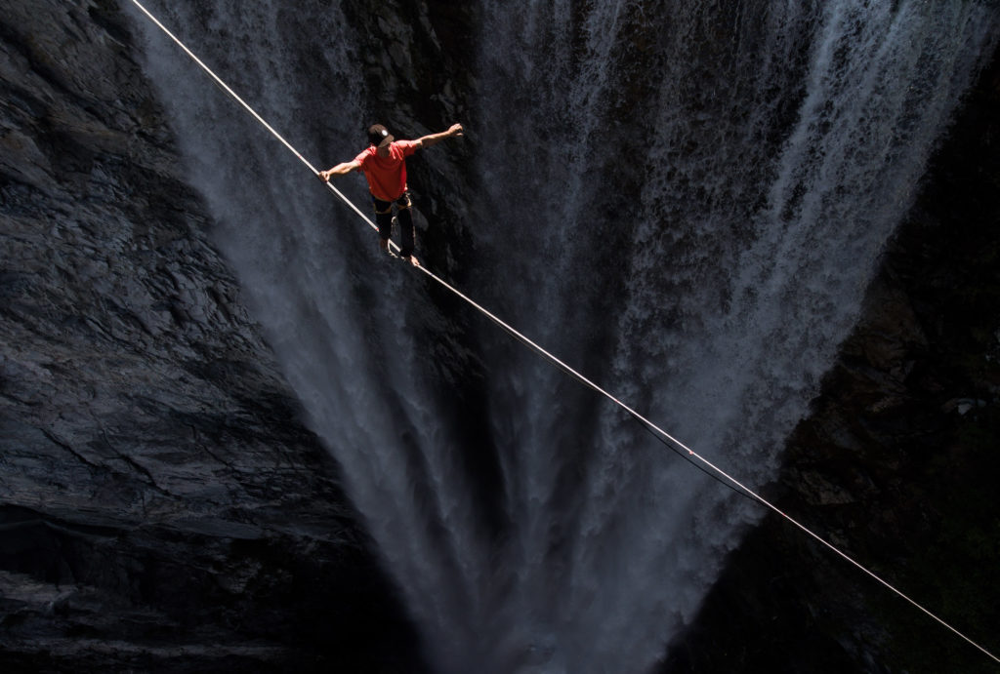
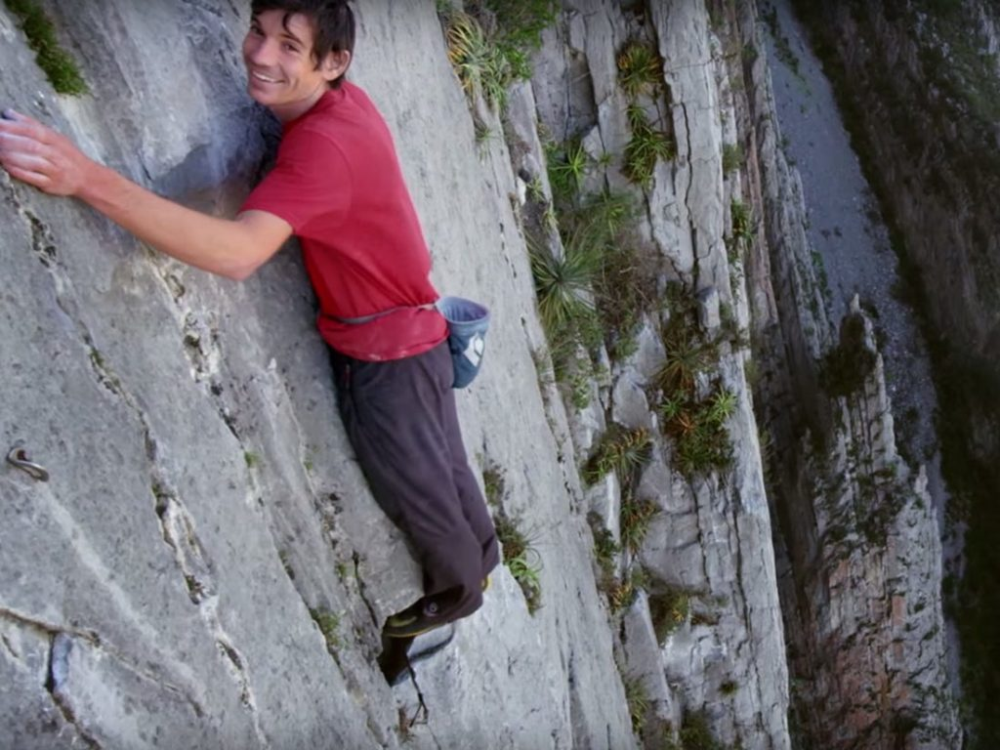
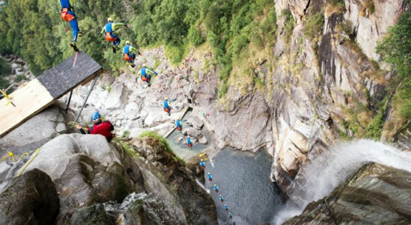
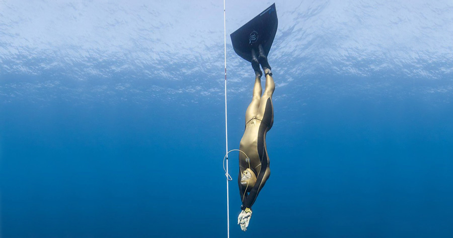
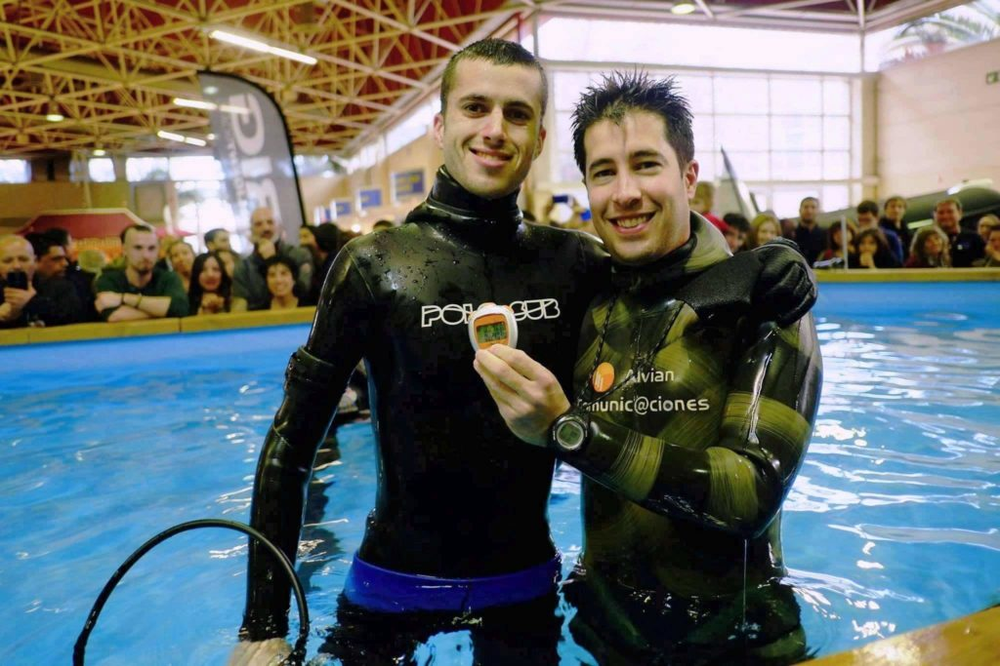

Elképesztő rekodok
Elképesztő és szinte lehetetlenül megdönthető Guinness rekordok jó sok van. Én ebből az 5 legérdekesebbet szeretnám kiemelni.
1.Kötéltánc a legnagyobb magasságban
Ezt a mutatványt védőháló nélkül hajtotta végre.Friedi Kühne extrém hegymászó 2009-ben megmutatta csapatával mit tudnak. Kifeszítettek egy 72 méter hosszú kötelet 400 méter magasan és ezen probléma nélkül átment.
2.Extrém hegymászás
Alex Hannold biztosító kötelek nélkül 2017-ben június harmadikán megmászta a 2300 méter magas El Capitant. Ez a legnagyobb gránithegy a földön. Ez az eredmény miatt tartják az emberek az egyik legjobb mászónak
3.Sziklaugrás
A hawaii kultúrában ez a férfiaknak egy úgynevezett bátorságpróbája volt. 2015-ben egy brazil-svájci atléta Lasso Schaller-nek sikerült is. Közel 60 méter magasságból ugrott a vízbe a Cascato del salto vízesésnél. Az atléta 4 másodpercig zuhant 123 kilométeres sebességgel.
4.Merülés a mélybe
Alexey Molchanov-nak különleges kapcsolata van a vízzel és a mélységgel. 2018-ban egyetlen levegővétellel 130 méteres mélységbe merült, és jött fel onnan mindenféle felszerelés nélkül. Ez azt jelenti, hogy vissza kellett tartani a lélegzetét pontosan 4 percig és lemerülni egy olyan mélységbe, ahova a fény már nem jut el. Ez egy nagyon félelmetes mutatvány.
5.Leghosszabb lélegzet
Egy átlagember maximum 5 percig képes visszatartani a lélegzetét. Edzett merülők ezt kitolják 9 percig is, ami valljuk be elég sok. Egy spanyol férfi Aleix Segura gondolta megfeszegeti ezt a határt. Képes volt 24 percig és 3 másodpercig visszatartania a lélegzetét.
